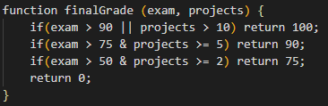

Phone: +375 29 1915802
E-mail: sanyadostanko@gmail.com
Telegram: @alexdostanko
LinkedIn: Alexandra Dostanko
I have a special secondary education. At the moment I am studying at the Minsk State College of Electronics on the specialty "Software of information technologies" for the 4th year. At the end of college I will get a qualification of "technician-programmer" I’m interested in Web Development because this occupation provides endless possibilities for professional growth, besides there’s a huge amount of free high quality resources for self-education and a large community of developers.. I believe, that my ability to learn and to gain new skills will lead me through this path of becoming a proficient Frontend Developer.
Create a function finalGrade, which calculates the final grade of a student depending on two parameters: a grade for the exam and a number of completed projects. This function should take two arguments: exam - grade for exam (from 0 to 100); projects - number of completed projects (from 0 and above); This function should return a number (final grade). There are four types of final grades:
